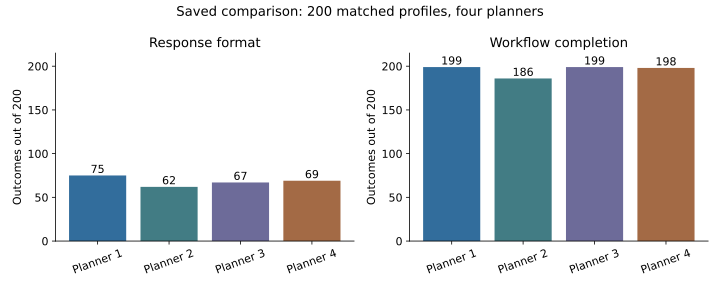
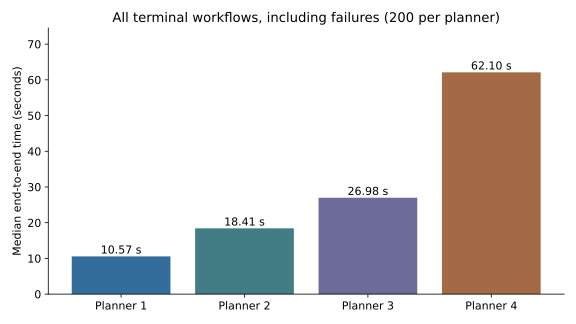
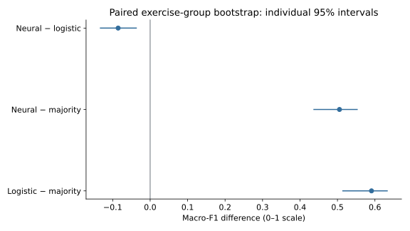

We analyzed the saved results without retraining models, searching the reference index again, revising replies or changing the original scores. The planner study contains 200 fictional profiles and 800 designated outcomes. All four planners use the same local language model; the comparison concerns the complete workflows.
| Planner | Valid format | Workflow completed | Valid completed plans | Coded checks passed | Full verification | Median time |
|---|---|---|---|---|---|---|
| 1 | 75/200 | 199/200 | 45/150 | 0/150 | 0/150 | 10.57 s |
| 2 | 62/200 | 186/200 | 40/150 | 0/150 | 0/150 | 18.41 s |
| 3 | 67/200 | 199/200 | 39/150 | 0/150 | 0/150 | 26.98 s |
| 4 | 69/200 | 198/200 | 47/150 | 0/150 | 0/150 | 62.10 s |
The baseline has the largest number of valid formats across all 200 profiles and the lowest observed time. Planner 4 has the largest number of completed, valid plan responses among the 150 feasible requests (47), compared with 45, 40 and 39. A valid format is not evidence that a plan meets every request.
The primary full-verification result is 0/150 for every planner. The automatic goal check was not implemented, and resource checks cover only a limited set of activity descriptions. These gaps prevented full verification. Saved assessments also contain genuine schedule, session-count and existing-commitment violations. We retain both facts: unknown checks are not passes, and lack of verification is not proof that every plan is unsafe or useless.
We compare Version 2 minus 1, Version 3 minus 2, Version 4 minus 3, and Version 4 minus 1 on the same profiles. Each binary comparison retains both-success, later-only, earlier-only and neither-success counts. Differences in rates use percentage points.
The format-rate differences are −6.5, +2.5, +1.0 and −3.0 percentage points in that order. These are descriptive differences in response format, not proof of better overall planning. Challenge cases remain separate: missing-information handling is 0/20 and conflict handling 0/15 for every planner; outside-scope handling is 3, 5, 8 and 3 out of 15. Planner 4 loses five of Planner 3’s outside-scope successes and adds none.
The primary intervals use 2,000 paired family-group resamples, seed 42, with individual 95% percentile endpoints. Every eligible member contributes whenever its group is drawn, including repeated draws. All 150 feasible profiles have different adopted family IDs, so the saved family structure is singleton. We also retain the prespecified wording-pattern sensitivity: the 14-pattern mapping across all 200 profiles has three groups in the feasible subset, containing 52, 50 and 48 profiles. We resample only those eligible groups.
All primary success flags are zero, so their saved-output bootstrap intervals and rate differences are [0, 0]. This is a constant distribution produced by these fixed flags and verification limits. It does not establish equivalence, zero real-world uncertainty or an absence of useful differences. No significance test, combined quality score, new pass threshold or winning planner is introduced.
The planner protocol specified family pairing, 2,000 resamples, seed 42 and percentile intervals. It did not fix the random-generator family, lexical group order or interpolation convention. We explicitly record PCG64, sorted exact IDs and linear percentiles as a numerical implementation clarification made at analysis time. These choices were already frozen for the classifier. Draws and estimates are saved so the calculations can be reproduced.
The classifier comparison uses the saved predictions for 438 test records in 385 exercise groups and all 16 frozen classes. Macro-F1 remains primary; accuracy, class-level metrics and confusion counts provide context.
| Classifier | Macro-F1 | Accuracy |
|---|---|---|
| Majority baseline | 0.0234 | 23.06% |
| L5 logistic regression | 0.6143 | 73.29% |
| N3 neural classifier | 0.5288 | 67.81% |
We compute all three fixed classifier contrasts using the same 2,000 exercise-group draws. Every resample retains the full class list with zero-division scores of zero, including absent classes in a resample. This measures sensitivity to the existing test groups, not retraining or seed variability. The validation-selected L5 application model remains unchanged.
| Macro-F1 contrast | Observed difference | Individual 95% interval |
|---|---|---|
| logistic regression minus majority | +0.5908 | [+0.5144, +0.6328] |
| neural minus majority | +0.5054 | [+0.4372, +0.5526] |
| neural minus logistic regression | -0.0855 | [-0.1327, -0.0370] |
We retain the original 30-question, 15-family held-out retrieval results. The source labels are 20 supported, two partially supported and eight unsupported. The original ranking denominator is 24 nonempty relevance sets; six empty relevance sets do not receive invented recall. Supported-only ranking uses 20 questions. The broader unsupported-service category contains the two partially supported and eight unsupported questions.
The early Step 35 text described a planned 20-answerable/10-unsupported split. We preserve the saved source populations rather than change their labels or denominators. Ranked evidence-set coverage, verified retrieval companion text and actual generation-prompt delivery remain different quantities. Companion preservation does not prove that every required fact reached the planner. No new retrieval intervals or held-out searches are introduced.
| Saved retrieval measure | Value | Scored questions |
|---|---|---|
| Mean Recall@5 | 1.0000 | 24 |
| MRR@5 | 0.9792 | 24 |
| Ranked complete-evidence-set coverage@5 | 1.0000 | 20 |
All 30 saved queries returned candidates, including the ten questions in the broader unsupported-service category. The saved no-match and error counts are zero. Returned references and high ranking scores do not establish that a question is answerable or that abstention works.
The Step 34 review contains 160 replies from 40 selected profiles, with 800 separate dimension entries. It is one ChatGPT-assisted review under Sam’s direction, not two independent teammate rating sets. We retain 799 numeric entries and one justified evidence N/A; agreement and weighted kappa remain unavailable. The assisted findings are descriptive supplementary evidence, not a replacement for the original independent-review design.
For each dimension, matched version comparisons report higher, equal and lower ratings. No scores are averaged across dimensions or reviewers. Most paired judgments are ties. For clarity, Planner 4 versus Planner 1 has two higher, 15 equal and 23 lower ratings among 40 profiles. The review sample contains 25 feasible and 15 challenge profiles, overrepresenting challenge cases compared with the full benchmark. Its pooled scores do not estimate all 800 replies.
All-terminal timing includes failed attempts. Completed-workflow, valid-format and unsuccessful-work timings are also saved separately; paired time differences identify which profiles were included. The observed all-terminal means are approximately 10.44, 18.90, 26.61 and 66.22 seconds. Longer workflows did not deliver a verified primary success in this benchmark. That observation does not establish an isolated causal effect of references, specialist roles or checks.
The frozen comparison summary records 2636 local model submissions across the full run. This is the cumulative total, not the 67 submissions shown for the final five-case batch. Planner 4’s saved terminal states are 198 revision-limit outcomes and two execution errors; none was internally accepted. Independent scoring remains separate from those internal decisions.
The original hash-bound runtime journals were also read. We report generation submissions, metadata/render attempts, distinct logical calls, cached role reads and available stage usage separately. Token usage is charged once per saved call ID; repeated reads do not multiply tokens. Missing hardware measurements or dollar-cost calculations remain unavailable.
We can compare recorded reliability, format, timing, class predictions and review patterns, but cannot declare a fully verified planner or a general winner. Failures and unknown coverage remain visible, with case identifiers and source hashes. The results concern a constructed benchmark and fixed saved outputs; they do not establish improved athletic performance, clinical suitability or results on real athletes. Future changes based on these findings belong to a new experiment version.
Step 36 will check reproduction of the saved analysis and its documented starting route. The original two-independent-teammate review component remains unperformed. All versioned tables, uncertainty draws, figures and limitations are retained with the analysis inputs.


